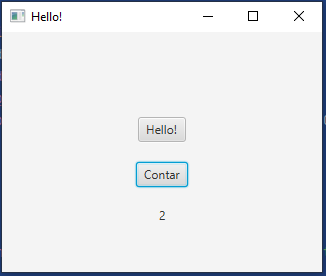

Hasta ahora, hemos hablado del Modelo-Vista-Controlador, pero no hemos identificado eso del "modelo". Representa la lógica de negocio y los datos en la aplicación, es decir, las clases, interfaces, etc., que tenemos en nuestro proyecto.
Como todavía no tenemos ninguno, vamos a crearlo. Para seguir con el ejemplo del contador, crearemos una clase que represente lo que necesitamos:
public class Contador {
private int contador;
public Contador(){
}
public void contar(){
contador++;
}
public int getContador(){
return contador;
}
}Este modelo deberemos integrarlo con nuestro controlador, por lo que eliminaremos la variable estática que teníamos para contar y en initialize() crearemos un objeto Contador que iremos manipulando cada vez que ejecutemos el método .setOnAction del botón que servía para contar:
import javafx.fxml.FXML;
import javafx.scene.control.Button;
import javafx.scene.control.Label;
public class HelloController {
@FXML
private Label welcomeText;
@FXML
private Button contador;
@FXML
private Label contando;
@FXML
public void initialize(){
Contador cont = new Contador();
contador.setOnAction(e -> {
cont.contar();
contando.setText(Integer.toString(cont.getContador()));
});
}
@FXML
protected void onHelloButtonClick() {
welcomeText.setText("Welcome to JavaFX Application!");
}
}Lánzalo y comprueba que el comportamiento de la aplicación sigue siendo el mismo.
